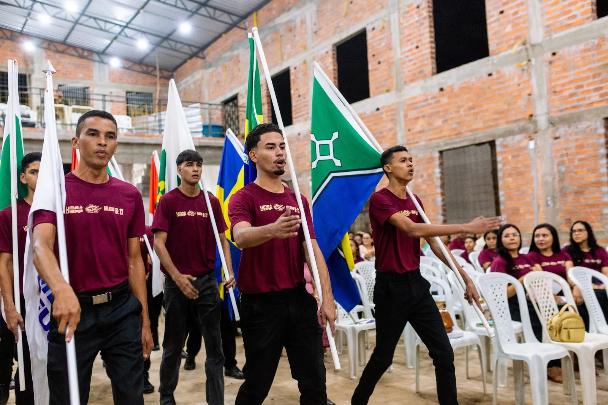
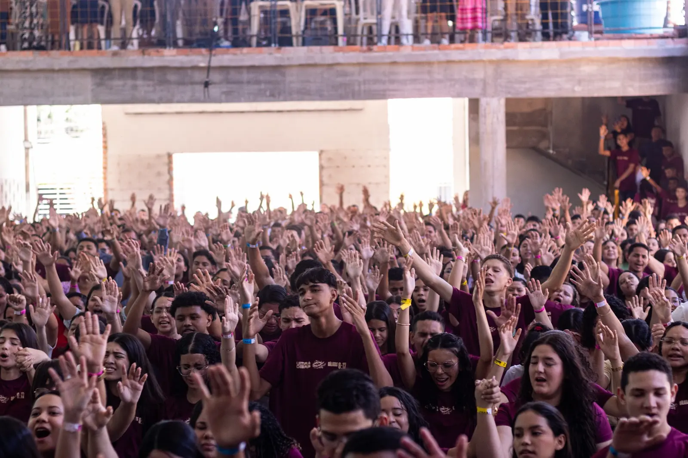
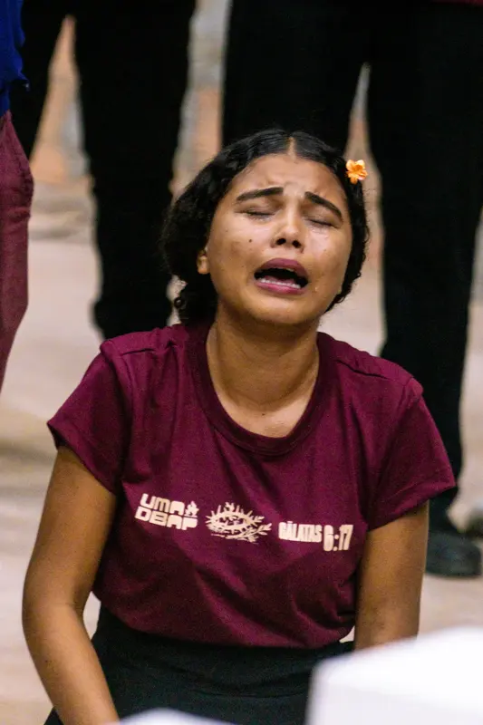
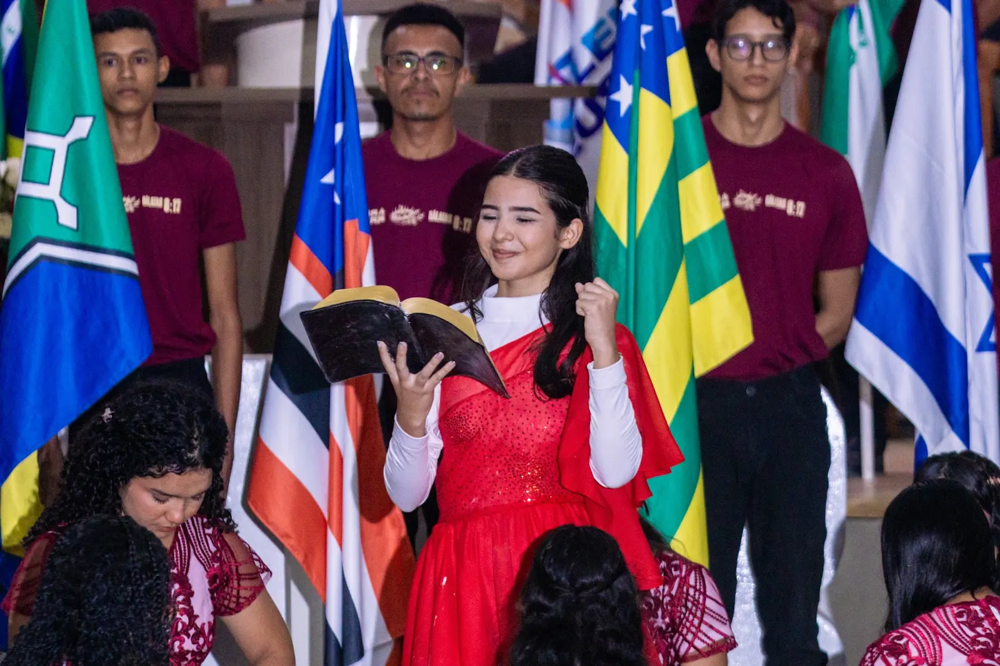
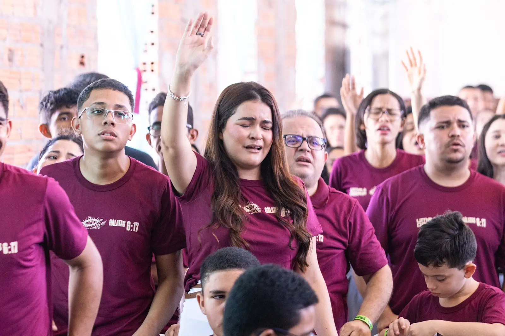
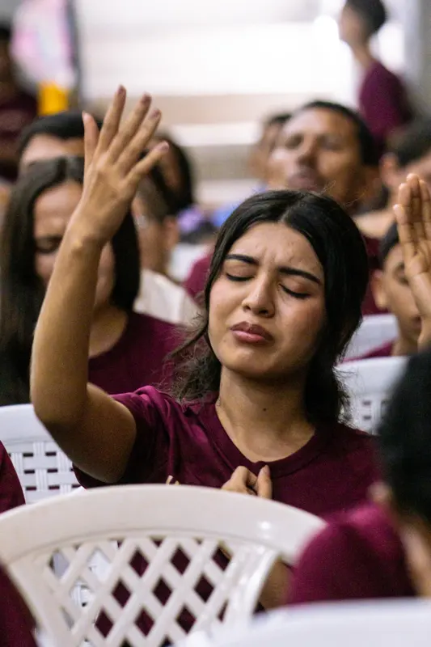
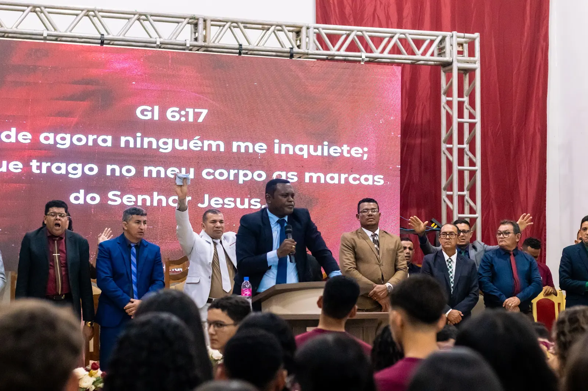
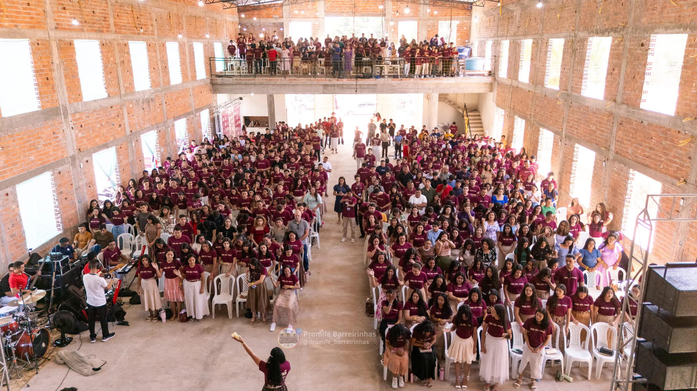

Dia I
Noite de abertura
O templo cheio, as bandeiras das cidades e o tema no telão: começou o 8º Congresso.
União de Mocidade das Assembleias de Deus do Baixo Parnaíba
Uma juventude acesa no Baixo Parnaíba — que leva no corpo, na voz e na vida as marcas de Cristo.
Individual ou caravana da sua igreja, em poucos minutos.
Fazer inscrição →Masculina e feminina, do P ao XG. Peça a sua ou a do grupo.
Pedir camisa →Os álbuns de cada culto, prontos para ver e baixar.
Ver fotos →Seja um patrocinador e caminhe com a mocidade do Baixo Parnaíba.
Quero apoiar →Quem somos
A UMADBAP é a União de Mocidade das Assembleias de Deus do Baixo Parnaíba. Reunimos os jovens das igrejas da região para buscar a Deus juntos — em oração, em louvor, na Palavra e na comunhão.
Todo ano, a mocidade se encontra no Congresso da UMADBAP: dias inteiros de culto, de ensino e de altar, que ficam marcados na memória e no coração de quem vive.

8º Congresso da UMADBAP · 2026 · Santa Quitéria
Três dias, cinco cultos
O templo cheio, as bandeiras das cidades e o tema no telão: começou o 8º Congresso.

Louvor, Palavra e altar. A mocidade de mãos erguidas, sem pressa de ir embora.

O culto ganhou a rua: palco montado e a cidade inteira chamada a ouvir.

Galeria lotada. Uma geração inteira louvando as obras de Deus.

A última noite — e a certeza de que as marcas vão com a gente pra casa.
“Desde agora, ninguém me inquiete; porque trago no meu corpo as marcas do Senhor Jesus.”
Gálatas 6:17
As marcas, nos rostos






Vozes do 8º Congresso

Gratidão
“Grandes coisas fez o Senhor por nós, pelas quais estamos alegres.”
Salmos 126:3
À Assembleia de Deus em Santa Quitéria, que abriu as portas e cuidou de cada detalhe do 8º Congresso, ao Projeto Marcos e a cada jovem, pastor, músico e voluntário que fez esses dias acontecerem. Pela coordenação da UMADBAP, Pastor Paulo Roberto.

Próximo congresso
Data, cidade e tema do próximo Congresso da UMADBAP serão anunciados primeiro no nosso Instagram. Segue a gente e fica perto da mocidade.
Seguir @umadbap no Instagram